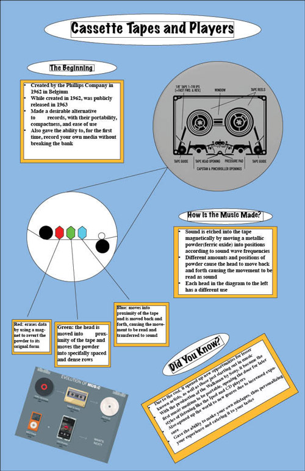

| Heath McAninch's Infographic Project
| |
| Home Print Photography Film Infographic | |
|  |
This is my infographic project. Following my love for music, I chose to do my project on cassettes and cassette players. In summary, cassette players use magnetic waves as well as magnets themselves to encode and decode the tape, which contains a form of powder that is arranged into designs which are read like a magnetic record. In this project, we were instructed to choose a form of technology, and, using or skills learned on InDesign, creatively inform the class on our topic. We were asked to explain how the item/concept works, when it was created, its uses, as well as its impacts on society. This project was our continued use in InDesign, furthering our knowledge in the program. We learned more about using the shaping tools, as well as how to make our work more than just a simple poster with text boxes. |
| Home Print Photography Film Infographic | |
|
©2023 Heath McAninch | |